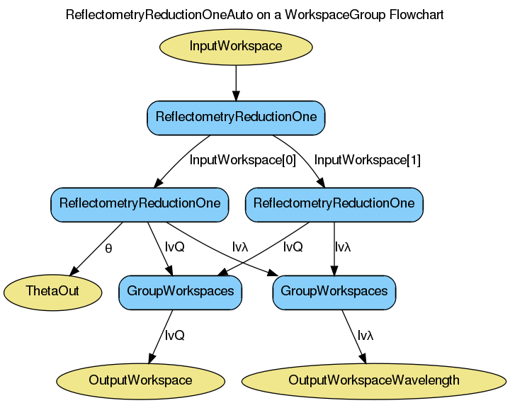

ReflectometryReductionOneAuto dialog.
Table of Contents
Reduces a single TOF/Lambda reflectometry run into a mod Q vs I/I0 workspace. Performs transmission corrections.
| Name | Direction | Type | Default | Description |
|---|---|---|---|---|
| InputWorkspace | Input | MatrixWorkspace | Mandatory | Input run in TOF or Lambda |
| RegionOfDirectBeam | Input | int list | Indices of the spectra a pair (lower, upper) that mark the ranges that correspond to the direct beam in multi-detector mode. | |
| AnalysisMode | Input | string | PointDetectorAnalysis | Analysis Mode to Choose. Allowed values: [‘PointDetectorAnalysis’, ‘MultiDetectorAnalysis’] |
| FirstTransmissionRun | Input | MatrixWorkspace | First transmission run workspace in TOF or Wavelength | |
| SecondTransmissionRun | Input | MatrixWorkspace | Second transmission run workspace in TOF | |
| OutputWorkspace | Output | MatrixWorkspace | Mandatory | Output workspace in wavelength q |
| OutputWorkspaceWavelength | Output | MatrixWorkspace | Mandatory | Output workspace in wavelength |
| Params | Input | dbl list | A comma separated list of first bin boundary, width, last bin boundary. These parameters are used for stitching together transmission runs. Values are in wavelength (angstroms). This input is only needed if a SecondTransmission run is provided. | |
| StartOverlap | Input | number | Optional | Overlap in Q. |
| EndOverlap | Input | number | Optional | End overlap in Q. |
| I0MonitorIndex | Input | number | Optional | I0 monitor workspace index |
| ProcessingInstructions | Input | string | Grouping pattern of workspace indices to yield only the detectors of interest. See GroupDetectors for syntax. | |
| WavelengthMin | Input | number | Optional | Wavelength Min in angstroms |
| WavelengthMax | Input | number | Optional | Wavelength Max in angstroms |
| WavelengthStep | Input | number | Optional | Wavelength step in angstroms |
| MonitorBackgroundWavelengthMin | Input | number | Optional | Monitor wavelength background min in angstroms |
| MonitorBackgroundWavelengthMax | Input | number | Optional | Monitor wavelength background max in angstroms |
| MonitorIntegrationWavelengthMin | Input | number | Optional | Monitor integral min in angstroms |
| MonitorIntegrationWavelengthMax | Input | number | Optional | Monitor integral max in angstroms |
| DetectorComponentName | Input | string | Name of the detector component i.e. point-detector. If these are not specified, the algorithm will attempt lookup using a standard naming convention. | |
| SampleComponentName | Input | string | Name of the sample component i.e. some-surface-holder. If these are not specified, the algorithm will attempt lookup using a standard naming convention. | |
| ThetaIn | Input | number | Optional | Final theta in degrees |
| ThetaOut | Output | number | Calculated final theta in degrees. | |
| NormalizeByIntegratedMonitors | Input | boolean | True | Normalize by dividing by the integrated monitors. |
| CorrectDetectorPositions | Input | boolean | True | Correct detector positions using ThetaIn (if given) |
| StrictSpectrumChecking | Input | boolean | True | Strict checking between spectrum numbers in input workspaces and transmission workspaces. |
| CorrectionAlgorithm | Input | string | AutoDetect | The type of correction to perform. Allowed values: [‘None’, ‘AutoDetect’, ‘PolynomialCorrection’, ‘ExponentialCorrection’] |
| Polynomial | Input | dbl list | Coefficients to be passed to the PolynomialCorrection algorithm. | |
| C0 | Input | number | 0 | C0 value to be passed to the ExponentialCorrection algorithm. |
| C1 | Input | number | 0 | C1 value to be passed to the ExponentialCorrection algorithm. |
| PolarizationAnalysis | Input | string | None | What Polarization mode will be used? None: No correction PNR: Polarized Neutron Reflectivity mode PA: Full Polarization Analysis PNR-PA. Allowed values: [‘None’, ‘PA’, ‘PNR’] |
| CPp | Input | dbl list | Effective polarizing power of the polarizing system. Expressed as a ratio 0 < Pp < 1 | |
| CAp | Input | dbl list | Effective polarizing power of the analyzing system. Expressed as a ratio 0 < Ap < 1 | |
| CRho | Input | dbl list | Ratio of efficiencies of polarizer spin-down to polarizer spin-up. This is characteristic of the polarizer flipper. Values are constants for each term in a polynomial expression. | |
| CAlpha | Input | dbl list | Ratio of efficiencies of analyzer spin-down to analyzer spin-up. This is characteristic of the analyzer flipper. Values are factors for each term in a polynomial expression. |
Facade over ReflectometryReductionOne v1.
Pulls numeric parameters out of the instrument parameters where possible. You can override any of these automatically applied defaults by providing your own value for the input.
See ReflectometryReductionOne v1 for more information on the wrapped algorithm.
If ProcessingInstructions is not set its value is inferred from other properties:
Note, the ProcessingInstructions are workspace indicies, not detector IDs. The first few workspaces may correspond to monitors, rather than detectors of interest. For the syntax of this property, see GroupDetectors v2.
If a WorkspaceGroup is provided to ReflectometryReductionOneAuto, it will follow the steps shown in the diagram below to produce its output.
If polarization correction is enabled, it is performed as an additional step once the main processing has completed. The following diagram shows how the PolarizationCorrection v1 algorithm is used.

If no Transmission runs are provided, then polynomial correction can be performed instead. Polynomial correction is enabled by setting the CorrectionAlgorithm property.
If set to AutoDetect, it looks at the instrument parameters for the correction parameter. If it is set to polynomial, then polynomial correction is performed using the PolynomialCorrection v1 algorithm, with the polynomial string taken from the instrument’s polynomial parameter. If the correction parameter is set to exponential instead, then the ExponentialCorrection v1 algorithm is used, with C0 and C1 taken from the instrument parameters, C0 and C1.
These can be specified manually by setting the CorrectionAlgorithm, Polynomial, C0, and C1 properties accordingly.
Example - Reduce a Run
run = Load(Filename='INTER00013460.nxs')
# Basic reduction with no transmission run
IvsQ, IvsLam, thetaOut = ReflectometryReductionOneAuto(InputWorkspace=run, ThetaIn=0.7)
print "The first four IvsLam Y values are: [ %.4e, %.4e, %.4e, %.4e ]" % (IvsLam.readY(0)[0], IvsLam.readY(0)[1], IvsLam.readY(0)[2], IvsLam.readY(0)[3])
print "The first four IvsQ Y values are: [ %.4e, %.4e, %.4e, %.4e ]" % (IvsQ.readY(0)[0], IvsQ.readY(0)[1], IvsQ.readY(0)[2], IvsQ.readY(0)[3])
print "Theta out is the same as theta in:",thetaOut
Output:
The first four IvsLam Y values are: [ 0.0000e+00, 0.0000e+00, 4.9588e-07, 1.2769e-06 ]
The first four IvsQ Y values are: [ 2.1435e-05, 5.0384e-05, 5.2332e-05, 5.2042e-05 ]
Theta out is the same as theta in: 0.7
Example - Reduce a Run with a transmission run
run = Load(Filename='INTER00013460.nxs')
trans = Load(Filename='INTER00013463.nxs')
# Basic reduction with a transmission run
IvsQ, IvsLam, thetaOut = ReflectometryReductionOneAuto(InputWorkspace=run, FirstTransmissionRun=trans, ThetaIn=0.7)
print "The first four IvsLam Y values are: [ %.4e, %.4e, %.4e, %.4e ]" % (IvsLam.readY(0)[0], IvsLam.readY(0)[1], IvsLam.readY(0)[2], IvsLam.readY(0)[3])
print "The first four IvsQ Y values are: [ %.4e, %.4e, %.4e, %.4e ]" % (IvsQ.readY(0)[0], IvsQ.readY(0)[1], IvsQ.readY(0)[2], IvsQ.readY(0)[3])
print "Theta out is the same as theta in:",thetaOut
Output:
The first four IvsLam Y values are: [ 0.0000e+00, 0.0000e+00, 4.8592e-06, 1.0580e-05 ]
The first four IvsQ Y values are: [ 9.6396e-01, 8.8177e-01, 7.1679e-01, 6.2066e-01 ]
Theta out is the same as theta in: 0.7
Example - Reduce a Run overloading default parameters
run = Load(Filename='INTER00013460.nxs')
# Reduction overriding the default values for MonitorBackgroundWavelengthMin and MonitorBackgroundWavelengthMax which would otherwise be retirieved from the workspace
IvsQ, IvsLam, thetaOut = ReflectometryReductionOneAuto(InputWorkspace=run, ThetaIn=0.7, MonitorBackgroundWavelengthMin=0.0, MonitorBackgroundWavelengthMax=1.0)
print "The first four IvsLam Y values are: [ %.4e, %.4e, %.4e, %.4e ]" % (IvsLam.readY(0)[0], IvsLam.readY(0)[1], IvsLam.readY(0)[2], IvsLam.readY(0)[3])
print "The first four IvsQ Y values are: [ %.4e, %.4e, %.4e, %.4e ]" % (IvsQ.readY(0)[0], IvsQ.readY(0)[1], IvsQ.readY(0)[2], IvsQ.readY(0)[3])
print "Theta out is the same as theta in:",thetaOut
Output:
The first four IvsLam Y values are: [ 0.0000e+00, 0.0000e+00, 4.9108e-07, 1.2645e-06 ]
The first four IvsQ Y values are: [ 2.1227e-05, 4.9897e-05, 5.1825e-05, 5.1538e-05 ]
Theta out is the same as theta in: 0.7
Example - Polynomial correction
run = Load(Filename='INTER00013460.nxs')
# Set up some paramters, allowing the algorithm to automatically detect the correction to use
SetInstrumentParameter(run, "correction", Value="polynomial")
SetInstrumentParameter(run, "polynomial", Value="0,0.5,1,2,3")
IvsQ, IvsLam, thetaOut = ReflectometryReductionOneAuto(InputWorkspace=run, ThetaIn=0.7)
def findByName(histories, name):
return filter(lambda x: x.name() == name, histories)[0]
# Find the PolynomialCorrection entry in the workspace's history
algHist = IvsLam.getHistory()
refRedOneAutoHist = findByName(algHist.getAlgorithmHistories(), "ReflectometryReductionOneAuto")
refRedOneHist = findByName(refRedOneAutoHist.getChildHistories(), "ReflectometryReductionOne")
polyCorHist = findByName(refRedOneHist.getChildHistories(), "PolynomialCorrection")
coefProp = findByName(polyCorHist.getProperties(), "Coefficients")
print "Coefficients: '" + coefProp.value() + "'"
Output:
Coefficients: '0,0.5,1,2,3'
Categories: Algorithms | Reflectometry\ISIS
{kind=link}